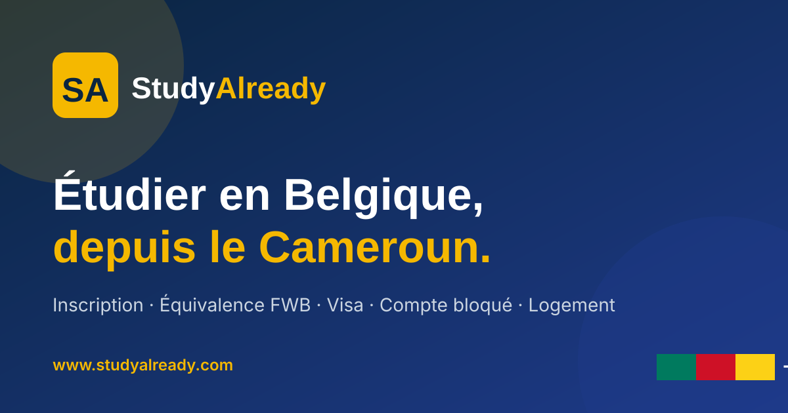

Clic droit sur une image, puis Enregistrer sous pour les utiliser sur les réseaux sociaux.
assets/img/logo.svg
assets/img/logo-blanc.svg
assets/img/logo-icon.svg

assets/img/og-cover.svg
Les SVG sont parfaits pour le web. Mais Facebook et Instagram préférent PNG ou JPG. Pour convertir :